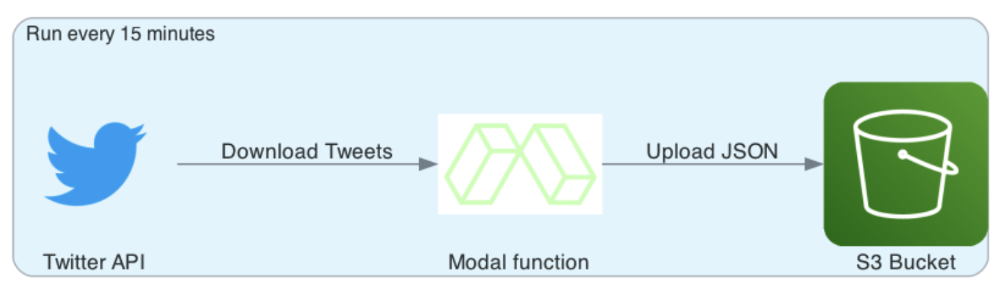

In this article, I’ll show how to build a Twitter data collector in just 100 lines of code. Twitter data has many applications, from social science research to marketing analytics. I’ll focus on the technical aspects of building a Twitter data collector.
Note: As of 2023, Twitter has [deprecated] free access to API that this article uses. The code will need to be updated to use the new, paid API.
By the end of this article, we’ll have a fully automated Twitter data collector that runs in the cloud. It will fetch new tweets that mention a keyword, and save them to an AWS S3 bucket as a JSON file. It’ll run every 15 minutes.

To run the Twitter collector for yourself, please follow the instructions in the readme of the Github repository. The code is written in Python and uses the Modal framework to automate the deployment and scheduling.
What is Modal?
Modal is an exciting new platform that makes running Python apps in the cloud feel like developing locally. Everything can be specified in code, and the app can be deployed with a single command. Logging and alerting is built in. Modal charges only for what you use at competitive rates. The total cost of running this app is less than $1 per month, which is well under the $30 in free credits that Modal offers each month.
Getting data from the Twitter API
The twitter Python package is an easy way to fetch data from the Twitter API. To get started, you need a Twitter developer account and API access keys. The developer account is free and you can create one here: https://developer.twitter.com/en.
Once you have the API keys, save them as environment variables. This is much safer than placing them directly into the code.
Here’s a function that uses the twitter package to fetch tweets that mention a keyword:
import twitter
import os
def get_tweets(term: str, count: int, since_id: str = None) -> list[dict]:
# Authenticate with Twitter API
api = twitter.Api(
consumer_key=os.environ["TWITTER_CONSUMER_KEY"],
consumer_secret=os.environ["TWITTER_CONSUMER_SECRET"],
access_token_key=os.environ["TWITTER_ACCESS_TOKEN"],
access_token_secret=os.environ["TWITTER_ACCESS_SECRET"],
)
# Fetch tweets that mention the term
tweets=api.GetSearch(
term=term,
count=count,
since_id=since_id,
lang="en", # adjust to fetch tweets in other languages
result_type="recent",
)
# Turn tweets object into a list of dictionaries
tweets_dict_list = [t.AsDict() for t in tweets]
return tweets_dict_listTo optimally use Twitter’s API limits, we want to only fetch tweets that we don’t have yet. That is done using the since_id parameter. The since_id is the id of the last tweet that we fetched. We can save this id to a file, and use it as the since_id parameter in the next call to get_tweets().
In addition to short term limits, the Twitter API caps data collection to 500k Tweets per month with Essential access and 2m Tweets per month with Elevated access.
Saving Twitter data to S3
For a long term project, data should be saved to secure cloud storage, such as AWS S3. From there, it could be analyzed using a data lake engine like AWS Athena, or loaded into a data warehouse.
Here’s a function to save the tweets from a call to get_tweets() to an S3 bucket:
import boto3
import json
def save_tweets(filename: str, tweets: list[dict]):
# Save JSON to S3
s3 = boto3.client("s3") # requires AWS credentials
s3.put_object(
Bucket=os.environ["S3_BUCKET"],
Key=filename,
Body=json.dumps(tweets),
)
print(f"Saved {len(tweets)} tweets to {filename} on S3")Of course you could also substitute any other blob storage, such as Azure Blob Storage or Google Cloud Storage.
S3 storage costs
Over time, the S3 bucket will fill with JSON files. Each file will contain a list of tweets that mention a keyword. A JSON file containing 100 tweets is about 300 kB. If we assume that we fetch 100 tweets every 15 minutes for a keyword, we’ll have about 29 mB of data per day. That’s about 1 GB per month, per keyword. Zipping the files will reduce the size by about 85%, but it will make them a bit harder to work with.
The AWS free tier offers 5 GB of storage per month. After that, you’ll need to pay for the storage. In addition, there will be a charge for the number of PUT requests to S3. Each keyword will generate about 3,000 PUT requests per month, which amounts to $0.015 per month. The free tier allows 2,000 PUT requests per month.
Managing a panel of keywords
How do we tell our app which terms to search for? We could hard code them into the app, but that would be a pain to maintain. Instead, we’ll save the terms to a JSON file in S3. The file will look like this:
[
{
"term": "python",
"since_id": "0",
"timestamp_last_search": "2021-01-01 00:00:00"
},
{
"term": "data science",
"since_id": "0",
"timestamp_last_search": "2021-01-01 00:00:00"
}
]The since_id is the id of the last tweet that we fetched. Initially, it’s set to 0 so that we fetch all tweets. The timestamp_last_search is the last time that we searched for tweets that mention this term. We’ll use this to prioritize terms that haven’t been searched for recently.
In each run of the app, we’ll fetch the terms from S3, and save them back to S3 after we’re done. Here’s a function to fetch the terms from S3:
def get_terms() -> list[dict]:
s3 = boto3.client("s3")
terms = json.loads(
s3.get_object(
Bucket=os.environ["S3_BUCKET"],
Key="terms.json"
)["Body"].read()
)
# Prioritize terms that have not been searched for recently
terms = sorted(terms, key=lambda t: (t["timestamp_last_search"], t["since_id"]))
return termsAfter fetching tweets, we update the terms.json file with the since_id of the last tweet and upload it to S3.
from datetime import datetime
def save_terms(terms: list[dict]) -> None:
s3 = boto3.client("s3")
s3.put_object(
Bucket=os.environ["S3_BUCKET"],
Key="terms.json",
Body=json.dumps(terms),
)
print("Updated terms.json on S3")
for term in terms:
get_tweets(term["term"], 100)
save_tweets("tweets.json", tweets)
term["since_id"] = tweets[-1]["id"]
term["timestamp_last_search"] = datetime.now().strftime("%Y-%m-%d %H:%M:%S"
save_terms(terms)Please note that this solution is not thread safe. If multiple instances of the app are running, they could overwrite each other’s changes to terms.json. This is a problem that could be solved by using a database, such as AWS DynamoDB.
Automating in the cloud using Modal
Modal is a Python framework for automating the deployment and scheduling of Python functions. It’s designed to be simple and easy to use. I found it easier and more powerful than AWS Lambda. They offer a $30 monthly free tier.
Modal takes Python code that is decorated with @stub.function() and deploys it to the cloud. It also handles the scheduling of the functions. The code is run in a Docker container, so you can use any Python package you want. Modal also provides a distributed dictionary, called stub.info in the code below that can be used to global variables. This is useful for storing the S3 bucket name, for example.
import modal
stub = modal.Stub(
image=modal.Image.debian_slim().pip_install(["boto3", "python-twitter"])
)Here we instruct Modal to build a Docker image that contains the boto3 and python-twitter packages. This image will be used to run the code in the cloud.
Scheduling
The Twitter API imposes a rate limit that resets every 15 minutes. So we’ll wrap the loop we previously wrote into a main() function to run every 15 minutes. This is done using the schedule argument in the @stub.function() decorator.
from datetime import datetime
@stub.function(schedule=modal.Period(minutes=15))
def main():
terms = get_terms.call()
print(f"Terms to search: {', '.join([t['term'] for t in terms])}")
for term in terms:
print(f"Searching for term: {term['term']}")
timestamp = datetime.now().strftime("%Y-%m-%d %H-%M-%S")
filename = f"{timestamp} {term['term']}.json".replace(" ", "_")
try:
tweets = get_tweets.call(term["term"], 100) # maximum allowed
except Exception as e:
print(e)
print("Could not get tweets. Saving tweets collected so far.")
break
since_id = save_tweets.call(filename, tweets) # returns since_id
# Update values in terms
term["since_id"] = since_id
term["timestamp_last_search"] = timestamp
save_terms.call(terms)Note that I’ve used the call() method to call the functions that we defined earlier. This is because we want them to run as Modal stubs in the cloud. The previous functions need slight modifications to become stubs. For example, the get_tweets function needs to be decorated like so:
@stub.function(secret=modal.Secret.from_name("twitter-api"))
def get_tweets()
...This lets Modal recognize it as a runnable function and also tells it to supply a secret variable to it. I’ve defined the secret variable in the Modal dashboard. The twitter-api secret variable contains the Twitter API keys and tokens. The aws-s3-access secret variable contains the AWS access key and secret key for an IAM user that has access to the S3 bucket.
Running and deploying
To run the app on Modal, we need to wrap the main() function in a if __name__ == "__main__" block. This lets us run the function from the command line. We also need to call stub.run() to start the stubs.
if __name__ == "__main__":
with stub.run():
main()To run this, use python app.py. The execution will happen on Modal. You can see the logs in the Modal dashboard. To schedule it, run modal deploy app.py. Modal automatically logs the runs and informs you if there are any errors.
Modal monitoring & costs
Modal charges CPU and memory by the second and only charges for what’s actually used. See their pricing. Cron jobs, monitoring, logging and custom Docker images are free.

The monitoring dashboard shows the scheduled executions, the CPU and memory usage, and the logs. As shown in the screenshot, I encountered a few errors while testing the app. The logs helped me debug the issues. The app never used even 0.05 CPU cores at a time and requires less than 10 MB of memory. Thanks to Modal’s pricing model, this app will cost less than $1 per month to run.
In addition to monitoring via Modal, you may wish to sign to updates from the Twitter API status page. This will inform you of any issues with the API.
Conclusion
In this post, we built a Python app that fetches tweets from Twitter and saves them to S3. We used Modal to deploy and schedule the app in the cloud, complete with monitoring and logging. The next step is to analyze the tweets. I’ll write about that in a future post.
If you wish to run this app yourself, you can clone the repo from GitHub and follow the install instructions in the README.
Photo by Joshua Sortino on Unsplash